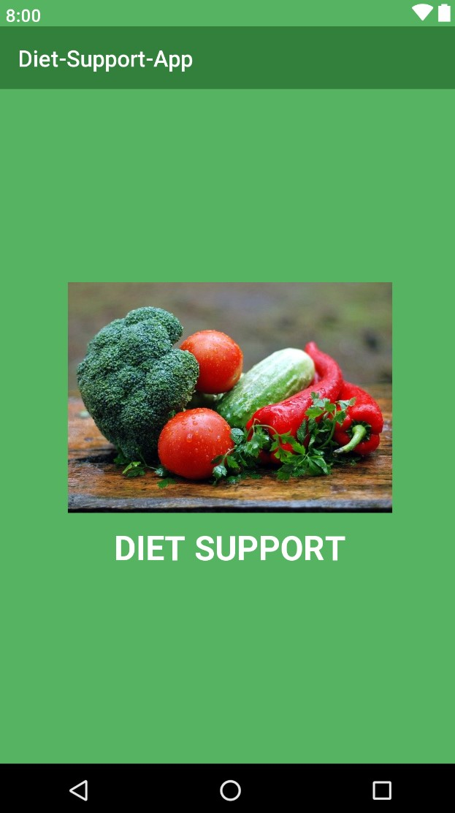
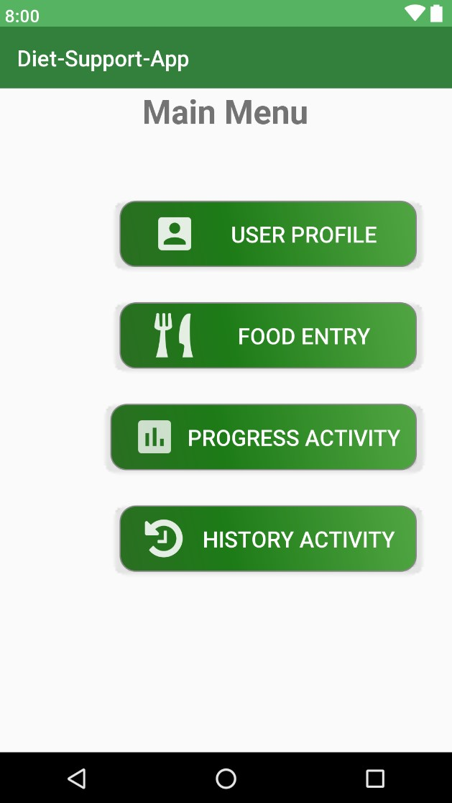
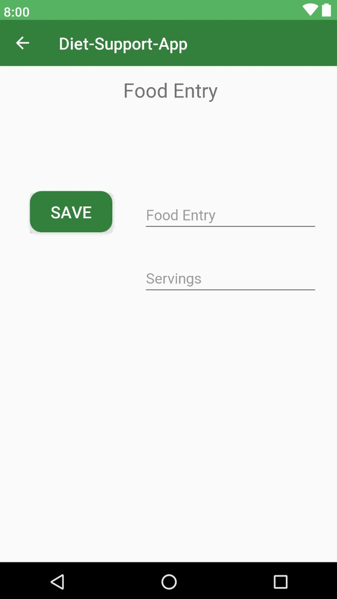

↵ Back to ePorfolio
Diet Support:
Mobile Application for Tracking Food Intake
The goal of the Diet Support mobile app was to keep track of nutrional intake from food so the user can see how close they are following a selected diet. After entering their personal information, they could enter a food item for what they ate, then check to see their daily and weekly percentages of how close they are to meeting their dietary goals.
This app was developed as a team with other class members of my BYUI CS 246 Software Design and Development course. We worked together on it throughout the semester. We developed in Java using Android Studio. As we progessed, we implemented the different principles of design and development, with the MVP model as the most notable incorporated principle.
My main responsiblity was implementing the presenter classes, which inevitably resulted in assistancing with the model and view classes as well. With my knowledge of the app as a whole, I was able to inform the rest of the team during our weekly meetings on what still needed to be completed and by what date in order to meet our production deadline.
  